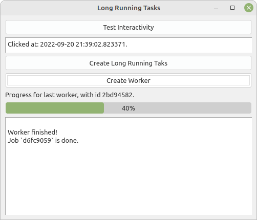

Jedním ze základních problémů aplikací s uživatelským rozhraním, je responzivita, což je schopnost reagovat na akce uživatele v reálném čase (Ramos 2021). Pakliže nebude aplikace reagovat na akce uživatele v reálném čase, pak nebude příliš uživatelsky přívětivá a ani použitelná (Fitzpatrick 2021). Tuto situaci v praxi znají všichni uživatelé, aplikace občas “zamrzne, zatuhne”, přičemž v některých případech dojde po chvíli k obnovení responzivity a někdy je nutné aplikaci nestandardně ukončit (např. použitím Task manageru). Důvody proč k tomuto dochází mohou být různé, od chyb až po náročnost některých operací.
V této kapitole se specificky zaměříme na operace, které trvají delší dobu, a z hlediska uživatele by způsobovaly “zamrznutí” aplikace. V této terminologii lze za dlouho běžící operaci označit jakoukoliv operaci, jejíž zpracování překročí cca 0.5 vteřiny. Tento čas už uživatel zvládne vnímat a rozpozná, že v aplikaci “něco nefunguje”. Běžné změny v GUI, vykreslení prvků GUI atd. obvykle zaberou řádově pouze setiny vteřiny, proto je vhodné cokoliv delšího spouštět tak, aby to neomezovalo uživatele v interakci s GUI, zároveň je ale nezbytné dát uživateli nějakým způsobem vědět, že operace probíhá na pozadí a pokud je to možné, tak ho informovat o stavu této operace (např. zpracovaná procenta).
QGIS
V QGIS jsou takto řešeny Nástroje zpracování, které se spouští tak, aby neblokovaly uživatelovu interakci s GUI. Zároveň je ve spodní liště zobrazen ukazatel zpracování, který uživatele informuje, kolik procent dané úlohy je zpracováno.
8.1 Spouštení procesu bez blokace GUI
Základním krokem je vytvoření objektu, který odvodíme z třídy QRunnable. Tato třída vytváří objekty, obsahující komplexní úlohy, které je možné snadno spouštět. Klíčovou roli hraje funkce run třídy QRunnable, která se spouští a měla by obsahovat dlouho běžící úlohu.
V příkladu pod odstavcem vytvoříme třídu Worker, pro kterou vytvoříme konstruktor, abychom demonstrovali, jak je možné do úlohy předat data. Mimo to v této třídě vytvoříme tři signály, s ohledem na omezení kombinace Pythonu a [PyQt]]{.software} nelze signály vytvořit přímo na objektu QRunnable. Je nutné pro signály vytvořit vlastní třídu a tu následně použít jako proměnnou ve třídě odvozené od QRunnable(Fitzpatrick 2021). Jeden informuje o ukončení této úlohy, druhý předává výslednou hodnotu a třetí slouží pro informování kolik procent úlohy už je zpracováno a název Worker, který běží. V tomto případě používáme jako vstup i výstup jednoduché texty, ale lze takto předávat i komplexnější data či celé objekty. Worker v ukázkovém příkladu nic specifického nevykonává, pouze 10 krát jednu sekundu vyčkává, abychom demonstrovali dlouho běžící process.
Zdrojový kód
import timefrom PyQt5.QtCore import QRunnable, pyqtSignal, QObjectclass WorkerSignals(QObject): finished = pyqtSignal() percentDone = pyqtSignal(str, float) result = pyqtSignal(str)class Worker(QRunnable):def__init__(self, job_name: str):super(Worker, self).__init__()self.signal = WorkerSignals()self.job_name = job_namedef run(self):for i inrange(10): time.sleep(1)self.signal.percentDone.emit(self.job_name, (i /10) *100)self.signal.finished.emit()self.signal.result.emit("Job `{}` is done.".format(self.job_name))
Tuto vytvořenou třídu může následně využít. Lze ji použít přímo z hlavního okna aplikace, či jakékoliv jiné dílčí komponenty. Je pouze nutné při inicializaci této komponenty vytvořit proměnnou třídy QThreadPool, která se postará o spouštění tříd odvozených z QRunnable. Tvorba této proměnné vypadá následovně.
self.threadpool = QThreadPool()
Mimo je nutné vytvořit v této třídě funkci, která bude instance třídy Worker vytvářet a předávat je ke spuštění do třídy QThreadPool. To je nezbytné minimum, nad rámec toho je možné k signálům třídy Worker připojit sloty (funkce), které budou na vyvolání signálů reagovat. V tomto ukázkovém případě pouze tiskem informačních zpráv, nicméně funkce mohou být libovolně komplexní.
V kódu používáme uuid, pomocí nějž generujeme náhodné unikátní označení uuid.uuid4(), respektive jeho část, pro každou instanci třídy Worker.
Výsledné funkce, které použijeme v kódu příslušné třídy, pak vypadají následovně:
Tento postup funguje v momentech kdy jednotlivé instance třídy Worker neupravují stejná data a ani si jinak vzájemně nekonkurují, co se týká zdrojů. Pakliže by bylo nutné řešit konkurenci úloh, jsou nutné pokročilejší postupy a přístupy k managementu dat a procesů Ramos (2021).
8.2 Praktická ukázka
Ukázkou aplikace, na níž je možné demonstrovat výše zmíněné koncepty a úskalí práce s GUI je ukázka long_running_tasks.py. Tato aplikace umožňuje vyzkoušení jak se chová aplikace při spuštění naivní úlohy (tlačítko Create Long Running Taks) v porovnání s úlohou spouštěnou skrze Threadpool (tlačítko Create Worker) (viz Obr. 8.1). Během toho, co jsou tyto úlohy aktivní, lze otestovat zda-li je aplikace responzivní pomocí tlačítka Test Interactivity, které by mělo okamžitě vypsat text Clicked at: aktuální datum a čas do QPlainTextEdit umístěného pod tímto tlačítkem.

Obr. 8.1: Aplikace pro testování interaktivity pro déle běžící úlohy
V této aplikaci pro jednoduchost existuje pouze jeden QProgressBar a jedna QLabel, které ukazují stav řešení i pro vícero současně spuštěných úloh. Takže se zprávy a procenta dokončení místy poměrně dynamicky střídají. V tomto případě je cílem jednoduchost UI, ne komplexnost řešení.
QGIS
V QGIS existuje komponenta, která zobrazuje procenta dokončení spuštěných Nástrojů zpracování. Tento widget je výrazně komplexnější, neboť zobrazuje pro vícero procesů souhrn procent dokončení a při kliknutí zobrazí okno s výpisem všech úloh a stavu jejich dokončení.
Komponenta se v GUI QGIS zobrazuje pouze pokud je aktivní ve stavovém řádku, před komponentou Souřadnice.